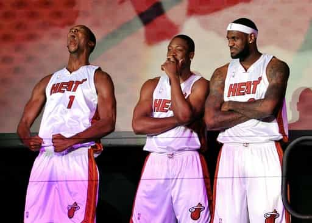

< < < Back
How Fans And The Media Are Making Professional Sports Unbearable – Return Of Kings
Amidst the hate mail I receive from single mothers and pink-haired fatties, I’ve recently seen an uptick in readers asking why I haven’t written a sports article lately, the DeAndre Johnson fiasco notwithstanding. The short answer to that is that I just don’t consume as much of the fringe coverage or follow the stories off the field as much as I used to.
I’m a huge fan of the NFL so I’m not cutting back on that any time soon. I follow baseball fairly closely and I’m big into racing—NASCAR, Indy Car, and Formula One. But gone are the days where I followed any and every sport closely and took in all the coverage, debate, and discussion surrounding the events.
Thing is, the reasons have nothing to do with the athletes themselves as their level of talent and performance is at an all time high.
It’s that sports fans and the sports media are as intolerable as they have ever been in recent memory. The hypocrisy, cynicism, and of course the advancement of the feminist agenda have made consuming them nearly impossible for me these days.
Between all the faux outrage over domestic violence, the ridiculous “lean in” campaign, the exponentially increasing presence of the hamster-laden female opinion and “expertise” on television and radio, and fans who worship teams, players, while trying to bring the moral cathedral into the competitive arena, sports has become much less appealing to follow outside the lines.
Tune in if you want your ears to bleed
Being unplugged from the matrix, however, is definitely the main reason I find myself watching only the events themselves, often times with the volume muted.
There are countless stories or incidents I could tell about why this is but I’ll just give a few of the most publicized ones and I’ll break it down in two sections: The media and the fans.
Today’s Sports Media
ESPN
ESPN made its mark on myself and millions of other men at a very young age. I’ve watched their flagship studio shows like SportsCenter, Baseball Tonight, and Sunday NFL Countdown for decades so it’s safe to say that the sports media juggernaut has my loyalty by process of branding me as a 12-year-old.
This network is the true worldwide leader in terms of sports and sports content as their slogan says. They’re currently available in over 80% of house holds in the U.S., boast 12 different sister networks, and are broadcasting in over 200 countries. Needless to say they’re the big man on campus by a wide margin.
I’ve watched this show since I was a teenager
Being the biggest, most successful sports media conglomerate in the world doesn’t come without it’s detractors and criticism. No surprise there as the biggest and most profitable companies are scrutinized much more than their less successful counterparts.
I’d never been one who was outright critical of them on account of my loyalty and blue pill mindset. But since being enlightened by the web’s version of Morpheus, their gyno-centricism sticks out like a sore thumb and becomes more obvious by the day.
The female influence on all of their mediums are palpable, as women are now present on just about every program they broadcast. There are female doctors, female panelists on opinion shows, and even females breaking down fantasy sports.
Only her name gives us proof of her sex
Personally, I’ve never minded seeing women on the sports landscape. Linda Cohn and Robin Roberts never rubbed me the wrong way back in the day on SportsCenter and female sideline reporters are paid to look good and report the facts. Nothing wrong with that either.
Today, the network is rampant with hamster droppings. Social issues are every bit as a part of their overall narrative as what goes on on the field of play. Mix that together with ever-increasing employed female pundits squawking about domestic violence, gay athletes, Title IX, and the ongoing pathetic attempts by females to “play with the boys” every 5 minutes and any man with even trace amounts of traditional or neomasculine beliefs would eventually start to tire of the charade.
What they didn’t tell you is that the boys from Vegas gave Miss Davis a dose of reality
In their defense, it would seem that this radical shift is necessary. Our P.C.-saturated culture has made it almost mandatory for them to employ more women, talk about social issues, and take a hard left stance on said issues.
We can all say “Well I’d never sell out to satisfy the masses” but most of us would fall in line to preserve our six, seven, and even eight-figure salaries and I wouldn’t blame you.
I’d also argue that some of ESPN’s workforce does not believe a word of the blue pill trash they spew on camera or radio. The one example I can point out is Colin Cowherd, who hosts his radio show The Herd. His stance on domestic violence seems almost too black and white for a man of his open mindedness.
There have also been a few instances where red pill truth slips out every once in a while such as Stephen A. Smith’s take on the Ray Rice situation:
What I’ve tried to employ the female members of my family — some of who you all met and talked to and what have you — is that … let’s make sure we don’t do anything to provoke wrong actions, because if I come — or somebody else come, whether it’s law enforcement officials, your brother or the fellas that you know — if we come after somebody has put their hands on you, it doesn’t negate the fact that they already put their hands on you.
There was immediate outrage both in and outside of the ESPN family and Smith was immediately suspended for a week which prompted an immediate retraction shortly after, thereby eliminating the threat.
But what his statement says is that there are definitely people within their ranks who aren’t all in on the gender equality farce. And because they’re all handsomely paid, they keep their honest opinions to themselves and I can’t say I blame them.
Gotcha
The other issue that’s turned me off these days is the way most of the media treats professional athletes in terms of their questioning. I certainly don’t feel sorry for the athletes because of the “privileged” lives they lead (which, by the way, they work very hard for) but media members seem much more intent on making them uncomfortable than simply extracting information to distribute to the sports public.
The main purpose of the media is to get information about the athletes and the events the public wouldn’t otherwise be aware of. Yes, there are other elements but that’s the gist of what they are there for.
Today’s reporter or beat writers are consistently attempting to just piss athletes off. Get a rise out of them. There’s no rhyme or reason, it just seems like the thing to do these days. It’s as though they get off on ruffling the feathers of athletes, coaches, general managers etc. Most of the questions are designed to throw them off their game or make them look bad or ignorant—“gotcha questions” if you will.

This one’s not hard to figure out. The main reason for this is flat out jealousy. It’s often been said that most sports writers are people who would gladly trade places with the athletes they cover, but because of lack of talent, discipline, and genetics they didn’t make the grade.
So it stands to reason they project their negative feelings stemming from their unfulfilled dreams onto the people they’re paid to write and talk about.
To their credit, the media at large doesn’t seem to crucify the increasing salaries of today’s athlete so I’ll give them a break on that. But that doesn’t stop them from getting a hard-on over making grown men who are physically, financially, and socially superior to them uncomfortable and then gaining prominence of “getting the best of” player X, Y, or Z.
Today’s Fan
Fan worship
Show me a man who “lives and dies with his team” and I’ll show you a man who is unhappy with his life.
There’s nothing wrong with getting excited about your team if they’re doing well, and there’s nothing wrong with being a little bummed when they’re not. But grown men who get shit-faced drunk and call out of work on Monday if their team wins or loses the Super Bowl are fucking pathetic.
Outside of gambling or owning a sports memorabilia shop, your team being great or shitty does not affect your life one way or the other. A man who invests a disproportionate amount of their energy and emotion into their team is a man who desperately needs an overhaul.

This is nothing to be proud of
In the same vein, nothing is more pitiful as a grown man who wears an article of clothing with another man’s name emblazoned on his back. It’s okay to admire a player for his athletic prowess and performance on the field of play but I’ve never understood the desire for a man to proudly don another man’s name anywhere on his person.
There are plenty of other ways to show support for your squad without surrendering your balls and looking like a fanboy. Sport a team shirt, a team hat, or some other accessory.
But if a man hits the gym, learns game, and engages in self improvement he’ll have no desire to engage in such emasculating acts like wearing somebody else’s name on his back.
The moral cathedral and contradictions
This is a big one for me. Fans these days are more hypocritical and judgmental than they’ve ever been in history. They’ll vilify an athlete for testing positive for a performance enhancing substance but defend an athlete for the same thing because he plays for their team. Then later that day they drive to the doctor for their weekly testosterone shot.
This year’s MLB All Star Game is the quintessential example of how fans pick and choose who gets a free pass and who doesn’t. Nelson Cruz and Jhonny Peralta were voted in as American and National League starters, respectively, and both have served 50-game suspensions for testing positive for PEDs and everyone seems to be fine with it.
Fans outside of New York make A-Rod public enemy #1
However, when Milwaukee Brewers outfielder Ryan Braun was voted in a few days ago outrage immediately broke out. Fans also seem to be happy that Yankees DH Alex Rodriguez was not voted onto the All Star Team for the 15th time citing “justice” as their reason for approval of his omission.
Which is it?
Revisionist history and referendums
Fans these days also fall victim to revisionist history. Michael Jordan never missed a shot, Tiger Woods is the only professional athlete to have fucked multiple hookers, and LeBron James sucks as a human being.
His Airness
I’m not going to make this a debate whether or not Jordan is the greatest player of all time but any time I suggest anything to the contrary, I’m met with vitriolic and incredulous arguments. These people don’t realize that his shoes, the way he was marketed, and the lack of social media back when he played paints a different picture of what he really was as a player.
Yes, at this time he’s the greatest of all time but not by as wide a margin as people would lead you to believe. He’s not the all time points leader (Kareem Abdul-Jabbar, 38,387 pts), assists leader (John Stockton, 15,806 assists), or the career rebounds leader (Wilt Chamberlain, 23,924 rebounds).
Hell, he doesn’t even have the most career titles as a player as Bill Russell won 11 with the Boston Celtics, almost double the amount of his 6 with the Chicago Bulls.

He’s great, but not a god
The only statistical category he’s #1 in points per game and the guy behind him, Wilt Chamberlain, is only .05 points behind him. Never mind that today’s fan will crucify athletes for shooting too much or being “selfish” with the ball and not spreading the wealth.
The bottom line is that Jordan worshipers act as though His Airness was perfect in every way and is infallible which is revisionist history at its best and worst. Jordan’s one of the greatest. No doubt about that. But Nike and Gatorade have made sure we never question that he’s the greatest of all time and if you stop gawking at his shoes and carefully edited highlight reels and look at things objectively you might actually entertain thoughts that this may not be the case.
King James
Staying in the same arena, LeBron James has been the target of some of the most unjustified hate I’ve ever witnessed as a sports fan. This guy is the most unselfish star player I’ve seen since Magic Johnson. He could score 40 a game easy but he chooses not to.
What’s more is that he’s never been in trouble with the law, and by all accounts seems to be a devoted husband and father (though we never really know).
Yet, fans hate this guy with a passion. Why?
“He left Cleveland!”
A man makes a decision to go to a better organization with better players, better weather, no state taxes, and to win championships when it became clear to him that his current team didn’t have the infrastructure or the desire to put a championship caliber team around him. Yeah…terrible fucking individual.
“It’s the way he left Cleveland!”
Colin Cowherd said it best when he said (referring to LeBron’s exit from Cleveland): “You’re not really upset at how she left you….you’re upset that she left you and that’s the real reason you’re pissed off!”
Would I have held a television special to announce I was going to another team when I knew it would rip the heart out of my home town fans?
Probably not.
Would I have held a pep rally with my new team guaranteeing multiple championships and declaring that it was going to be easy.
Maybe, maybe not.

It’s been five years people…let it go
I’d like to think I’d have handled taking my talents to South Beach in a different manner but one never knows. Besides, who among us haven’t made stupid decisions in our mid-twenties? I don’t see any hands up.
Personally, I don’t give a shit how he handled it and I’m not going to judge him for the way he did it. To be honest it was quite entertaining because I’m not from Cleveland or Miami but I digress.
The point is, people will rationalize anything and The Decision is their excuse to hate on one of the greatest players in NBA history who also seems to be a pretty good dude to boot. Every possession is a referendum on his legacy and that’s just asinine.

What teenager would turn down doing this cover?
This, again, is another case of jealousy. We all saw him on the cover of Sports Illustrated as a teenager, we all saw him dubbed as “The Chosen One,” and we all now he’ll be one of a handful of billion dollar athletes when all is said and done.
But like I said in this article, LeBron haters should just admit they hate the guy because he lives a better life than they do and leave it at that.
Wrap up
So there you have it. Pompous, sadistic, feminist media members and delusional, envious, moralist fans are the main reasons I’ve drastically cut back on sports. I could go on for days about this stuff but I’m a team player so I’ll spare you a 10,000-word article this week.
I definitely still watch the games and races, but I can do without all of the increasingly spoiling trimmings on the side. It won’t be long before I wean myself off of the actual events themselves because of this stuff. When that happens, it’ll be a sad day indeed.
Read Next: It’s Time To Stop Hating Professional Athletes